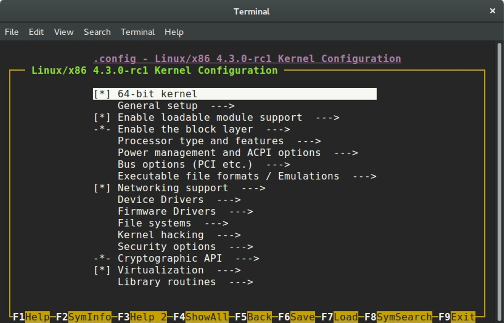
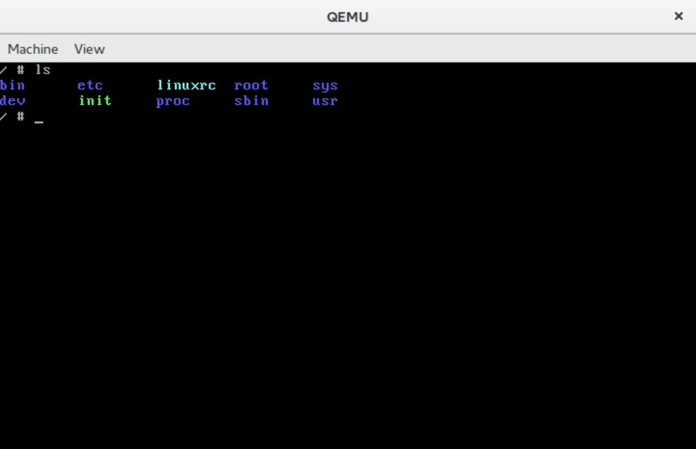
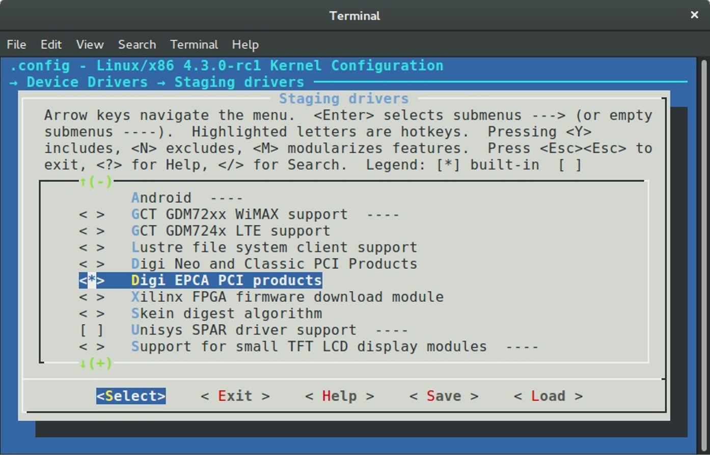

Linux kernel development
Introduction
As you already may know, I've started a series of blog posts about assembler programming for x86_64 architecture in the last year. I have never written a line of low-level code before this moment, except for a couple of toy Hello World examples in university. It was a long time ago and, as I already said, I didn't write low-level code at all. Some time ago I became interested in such things. I understood that I can write programs, but didn't actually understand how my program is arranged.
After writing some assembler code I began to understand how my program looks after compilation, approximately. But anyway, I didn't understand many other things. For example: what occurs when the syscall instruction is executed in my assembler, what occurs when the printf function starts to work or how can my program talk with other computers via network. Assembler programming language didn't give me answers to my questions and I decided to go deeper in my research. I started to learn from the source code of the Linux kernel and tried to understand the things that I'm interested in. The source code of the Linux kernel didn't give me the answers to all of my questions, but now my knowledge about the Linux kernel and the processes around it is much better.
I'm writing this part nine and a half months after I've started to learn from the source code of the Linux kernel and published the first part of this book. Now it contains forty parts and it is not the end. I decided to write this series about the Linux kernel mostly for myself. As you know the Linux kernel is very huge piece of code and it is easy to forget what does this or that part of the Linux kernel mean and how does it implement something. But soon the linux-insides repo became popular and after nine months it has 9096 stars:
It seems that people are interested in the insides of the Linux kernel. Besides this, in all the time that I have been writing linux-insides, I have received many questions from different people about how to begin contributing to the Linux kernel. Generally people are interested in contributing to open source projects and the Linux kernel is not an exception:
So, it seems that people are interested in the Linux kernel development process. I thought it would be strange if a book about the Linux kernel would not contain a part describing how to take a part in the Linux kernel development and that's why I decided to write it. You will not find information about why you should be interested in contributing to the Linux kernel in this part. But if you are interested how to start with Linux kernel development, this part is for you.
Let's start.
How to start with Linux kernel
First of all, let's see how to get, build, and run the Linux kernel. You can run your custom build of the Linux kernel in two ways:
- Run the Linux kernel on a virtual machine;
- Run the Linux kernel on real hardware.
I'll provide descriptions for both methods. Before we start doing anything with the Linux kernel, we need to get it. There are a couple of ways to do this depending on your purpose. If you just want to update the current version of the Linux kernel on your computer, you can use the instructions specific to your Linux distro.
In the first case you just need to download new version of the Linux kernel with the package manager. For example, to upgrade the version of the Linux kernel to 4.1 for Ubuntu (Vivid Vervet), you will just need to execute the following commands:
$ sudo add-apt-repository ppa:kernel-ppa/ppa
$ sudo apt-get update
After this execute this command:
$ apt-cache showpkg linux-headers
and choose the version of the Linux kernel in which you are interested. In the end execute the next command and replace ${version} with the version that you chose in the output of the previous command:
$ sudo apt-get install linux-headers-${version} linux-headers-${version}-generic linux-image-${version}-generic --fix-missing
and reboot your system. After the reboot you will see the new kernel in the grub menu.
In the other way if you are interested in the Linux kernel development, you will need to get the source code of the Linux kernel. You can find it on the kernel.org website and download an archive with the Linux kernel source code. Actually the Linux kernel development process is fully built around git version control system. So you can get it with git from the kernel.org:
$ git clone git://git.kernel.org/pub/scm/linux/kernel/git/torvalds/linux.git
I don't know how about you, but I prefer github. There is a mirror of the Linux kernel mainline repository, so you can clone it with:
$ git clone git@github.com:torvalds/linux.git
I use my own fork for development and when I want to pull updates from the main repository I just execute the following command:
$ git checkout master
$ git pull upstream master
Note that the remote name of the main repository is upstream. To add a new remote with the main Linux repository you can execute:
git remote add upstream git@github.com:torvalds/linux.git
After this you will have two remotes:
~/dev/linux (master) $ git remote -v
origin git@github.com:0xAX/linux.git (fetch)
origin git@github.com:0xAX/linux.git (push)
upstream https://github.com/torvalds/linux.git (fetch)
upstream https://github.com/torvalds/linux.git (push)
One is of your fork (origin) and the second is for the main repository (upstream).
Now that we have a local copy of the Linux kernel source code, we need to configure and build it. The Linux kernel can be configured in different ways. The simplest way is to just copy the configuration file of the already installed kernel that is located in the /boot directory:
$ sudo cp /boot/config-$(uname -r) ~/dev/linux/.config
If your current Linux kernel was built with the support for access to the /proc/config.gz file, you can copy your actual kernel configuration file with this command:
$ cat /proc/config.gz | gunzip > ~/dev/linux/.config
If you are not satisfied with the standard kernel configuration that is provided by the maintainers of your distro, you can configure the Linux kernel manually. There are a couple of ways to do it. The Linux kernel root Makefile provides a set of targets that allows you to configure it. For example menuconfig provides a menu-driven interface for the kernel configuration:

The defconfig argument generates the default kernel configuration file for the current architecture, for example x86_64 defconfig. You can pass the ARCH command line argument to make to build defconfig for the given architecture:
$ make ARCH=arm64 defconfig
The allnoconfig, allyesconfig and allmodconfig arguments allow you to generate a new configuration file where all options will be disabled, enabled, and enabled as modules respectively. The nconfig command line arguments that provides ncurses based program with menu to configure Linux kernel:

And even randconfig to generate random Linux kernel configuration file. I will not write about how to configure the Linux kernel or which options to enable because it makes no sense to do so for two reasons: First of all I do not know your hardware and second, if you know your hardware, the only remaining task is to find out how to use programs for kernel configuration, and all of them are pretty simple to use.
OK, we now have the source code of the Linux kernel and configured it. The next step is the compilation of the Linux kernel. The simplest way to compile Linux kernel is to just execute:
$ make
scripts/kconfig/conf --silentoldconfig Kconfig
#
# configuration written to .config
#
CHK include/config/kernel.release
UPD include/config/kernel.release
CHK include/generated/uapi/linux/version.h
CHK include/generated/utsrelease.h
...
...
...
OBJCOPY arch/x86/boot/vmlinux.bin
AS arch/x86/boot/header.o
LD arch/x86/boot/setup.elf
OBJCOPY arch/x86/boot/setup.bin
BUILD arch/x86/boot/bzImage
Setup is 15740 bytes (padded to 15872 bytes).
System is 4342 kB
CRC 82703414
Kernel: arch/x86/boot/bzImage is ready (#73)
To increase the speed of kernel compilation you can pass -jN command line argument to make, where N specifies the number of commands to run simultaneously:
$ make -j8
If you want to build Linux kernel for an architecture that differs from your current, the simplest way to do it pass two arguments:
ARCHcommand line argument and the name of the target architecture;CROSS_COMPILERcommand line argument and the cross-compiler tool prefix;
For example if we want to compile the Linux kernel for the arm64 with default kernel configuration file, we need to execute following command:
$ make -j4 ARCH=arm64 CROSS_COMPILER=aarch64-linux-gnu- defconfig
$ make -j4 ARCH=arm64 CROSS_COMPILER=aarch64-linux-gnu-
As result of compilation we can see the compressed kernel - arch/x86/boot/bzImage. Now that we have compiled the kernel, we can either install it on our computer or just run it in an emulator.
Installing Linux kernel
As I already wrote we will consider two ways to launch new kernel: in the first case we can install and run the new version of the Linux kernel on the real hardware and the second is launch the Linux kernel on a virtual machine. In the previous paragraph we saw how to build the Linux kernel from source code and as a result we have got compressed image:
...
...
...
Kernel: arch/x86/boot/bzImage is ready (#73)
After we have got the bzImage we need to install headers, modules of the new Linux kernel with the:
$ sudo make headers_install
$ sudo make modules_install
and directly the kernel itself:
$ sudo make install
From this moment we have installed new version of the Linux kernel and now we must tell the bootloader about it. Of course we can add it manually by the editing of the /boot/grub2/grub.cfg configuration file, but I prefer to use a script for this purpose. I'm using two different Linux distros: Fedora and Ubuntu. There are two different ways to update the grub configuration file. I'm using following script for this purpose:
#!/bin/bash
source "term-colors"
DISTRIBUTIVE=$(cat /etc/*-release | grep NAME | head -1 | sed -n -e 's/NAME\=//p')
echo -e "Distributive: ${Green}${DISTRIBUTIVE}${Color_Off}"
if [[ "$DISTRIBUTIVE" == "Fedora" ]] ;
then
su -c 'grub2-mkconfig -o /boot/grub2/grub.cfg'
else
sudo update-grub
fi
echo "${Green}Done.${Color_Off}"
This is the last step of the new Linux kernel installation and after this you can reboot your computer and select new version of the kernel during boot.
The second case is to launch new Linux kernel in the virtual machine. I prefer qemu. First of all we need to build initial ramdisk - initrd for this. The initrd is a temporary root file system that is used by the Linux kernel during initialization process while other filesystems are not mounted. We can build initrd with the following commands:
First of all we need to download busybox and run menuconfig for its configuration:
$ mkdir initrd
$ cd initrd
$ curl http://busybox.net/downloads/busybox-1.23.2.tar.bz2 | tar xjf -
$ cd busybox-1.23.2/
$ make menuconfig
$ make -j4
busybox is an executable file - /bin/busybox that contains a set of standard tools like coreutils. In the busybox menu we need to enable: Build BusyBox as a static binary (no shared libs) option:

We can find this menu in the:
Busybox Settings
--> Build Options
After this we exit from the busybox configuration menu and execute following commands for building and installation of it:
$ make -j4
$ sudo make install
Now that busybox is installed, we can begin building our initrd. To do this, we go to the previous initrd directory and:
$ cd ..
$ mkdir -p initramfs
$ cd initramfs
$ mkdir -pv {bin,sbin,etc,proc,sys,usr/{bin,sbin}}
$ cp -av ../busybox-1.23.2/_install/* .
copy busybox fields to the bin, sbin and other directories. Now we need to create executable init file that will be executed as a first process in the system. My init file just mounts procfs and sysfs filesystems and executed shell:
#!/bin/sh
mount -t proc none /proc
mount -t sysfs none /sys
exec /bin/sh
Now we can create an archive that will be our initrd:
$ find . -print0 | cpio --null -ov --format=newc | gzip -9 > ~/dev/initrd_x86_64.gz
We can now run our kernel in the virtual machine. As I already wrote I prefer qemu for this. We can run our kernel with the following command:
$ qemu-system-x86_64 -snapshot -m 8GB -serial stdio -kernel ~/dev/linux/arch/x86_64/boot/bzImage -initrd ~/dev/initrd_x86_64.gz -append "root=/dev/sda1 ignore_loglevel"

From now we can run the Linux kernel in the virtual machine and this means that we can begin to change and test the kernel.
Consider using ivandaviov/minimal or Buildroot to automate the process of generating initrd.
Getting started with the Linux Kernel Development
The main point of this paragraph is to answer two questions: what to do and what not to do before sending your first patch to the Linux kernel. Please, do not confuse this to do with todo. I have no answer what you can fix in the Linux kernel. I just want to tell you my workflow during experimenting with the Linux kernel source code.
First of all I pull the latest updates from Linus's repo with the following commands:
$ git checkout master
$ git pull upstream master
As soon as your local copy of the Linux kernel source code is in sync with the mainline repository, we can start to apply changes to it. I already wrote, I have no advice for where you should start and what TODO to choose within the Linux kernel. But the best place for newbies is the staging tree. In other words the set of drivers from the drivers/staging directory. The maintainer of this tree is Greg Kroah-Hartman and the staging drivers are a good target for trivial patch fixes. Let's look at this simple example, that describes how to generate a patch, check it and send it to the Linux kernel mail listing.
If we look in the driver for the Digi International EPCA PCI based devices, we will see the dgap_sindex function on line 295:
static char *dgap_sindex(char *string, char *group)
{
char *ptr;
if (!string || !group)
return NULL;
for (; *string; string++) {
for (ptr = group; *ptr; ptr++) {
if (*ptr == *string)
return string;
}
}
return NULL;
}
This function looks for a match of any character in the group and returns that position. During research of source code of the Linux kernel, I have noted that the lib/string.c source code file contains the implementation of the strpbrk function that does the same thing as dgap_sinidex. It is not a good idea to use a custom implementation of a function that already exists, so we can remove the dgap_sindex function from the drivers/staging/dgap/dgap.c source code file and use the strpbrk instead.
First of all let's create new git branch based on the current master that synced with the Linux kernel mainline repo:
$ git checkout -b "dgap-remove-dgap_sindex"
And now we can replace the dgap_sindex with the strpbrk. After we did all changes we need to recompile the Linux kernel or just dgap directory. Do not forget to enable this driver in the kernel configuration. You can find it in the:
Device Drivers
--> Staging drivers
----> Digi EPCA PCI products

Now is time to make commit. I'm using following combination for this:
$ git add .
$ git commit -s -v
After the last command an editor will be opened that will be chosen from $GIT_EDITOR or $EDITOR environment variable. The -s command line argument will add Signed-off-by line by the committer at the end of the commit log message. You can find this line in the end of each commit message, for example - 00cc1633. The main point of this line is the tracking of who did a change. The -v option show unified diff between the HEAD commit and what would be committed at the bottom of the commit message. It is not necessary, but very useful sometimes. A couple of words about commit message. Actually a commit message consists from two parts:
The first part is on the first line and contains short description of changes. It starts from the [PATCH] prefix followed by a subsystem, driver or architecture name and after : symbol short description. In our case it will be something like this:
[PATCH] staging/dgap: Use strpbrk() instead of dgap_sindex()
After short description usually we have an empty line and full description of the commit. In our case it will be:
The <linux/string.h> provides strpbrk() function that does the same that the
dgap_sindex(). Let's use already defined function instead of writing custom.
And the Sign-off-by line in the end of the commit message. Note that each line of a commit message must no be longer than 80 symbols and commit message must describe your changes in details. Do not just write a commit message like: Custom function removed, you need to describe what you did and why. The patch reviewers must know what they review. Besides this commit messages in this view are very helpful. Each time when we can't understand something, we can use git blame to read description of changes.
After we have committed changes time to generate patch. We can do it with the format-patch command:
$ git format-patch master
0001-staging-dgap-Use-strpbrk-instead-of-dgap_sindex.patch
We've passed name of the branch (master in this case) to the format-patch command that will generate a patch with the last changes that are in the dgap-remove-dgap_sindex branch and not are in the master branch. As you can note, the format-patch command generates file that contains last changes and has name that is based on the commit short description. If you want to generate a patch with the custom name, you can use --stdout option:
$ git format-patch master --stdout > dgap-patch-1.patch
The last step after we have generated our patch is to send it to the Linux kernel mailing list. Of course, you can use any email client, git provides a special command for this: git send-email. Before you send your patch, you need to know where to send it. Yes, you can just send it to the Linux kernel mailing list address which is linux-kernel@vger.kernel.org, but it is very likely that the patch will be ignored, because of the large flow of messages. The better choice would be to send the patch to the maintainers of the subsystem where you have made changes. To find the names of these maintainers use the get_maintainer.pl script. All you need to do is pass the file or directory where you wrote code.
$ ./scripts/get_maintainer.pl -f drivers/staging/dgap/dgap.c
Lidza Louina <lidza.louina@gmail.com> (maintainer:DIGI EPCA PCI PRODUCTS)
Mark Hounschell <markh@compro.net> (maintainer:DIGI EPCA PCI PRODUCTS)
Daeseok Youn <daeseok.youn@gmail.com> (maintainer:DIGI EPCA PCI PRODUCTS)
Greg Kroah-Hartman <gregkh@linuxfoundation.org> (supporter:STAGING SUBSYSTEM)
driverdev-devel@linuxdriverproject.org (open list:DIGI EPCA PCI PRODUCTS)
devel@driverdev.osuosl.org (open list:STAGING SUBSYSTEM)
linux-kernel@vger.kernel.org (open list)
You will see the set of the names and related emails. Now we can send our patch with:
$ git send-email --to "Lidza Louina <lidza.louina@gmail.com>" \
--cc "Mark Hounschell <markh@compro.net>" \
--cc "Daeseok Youn <daeseok.youn@gmail.com>" \
--cc "Greg Kroah-Hartman <gregkh@linuxfoundation.org>" \
--cc "driverdev-devel@linuxdriverproject.org" \
--cc "devel@driverdev.osuosl.org" \
--cc "linux-kernel@vger.kernel.org"
That's all. The patch is sent and now you only have to wait for feedback from the Linux kernel developers. After you send a patch and a maintainer accepts it, you will find it in the maintainer's repository (for example patch that you saw in this part) and after some time the maintainer will send a pull request to Linus and you will see your patch in the mainline repository.
That's all.
Some advice
In the end of this part I want to give you some advice that will describe what to do and what not to do during development of the Linux kernel:
-
Think, Think, Think. And think again before you decide to send a patch.
-
Each time when you have changed something in the Linux kernel source code - compile it. After any changes. Again and again. Nobody likes changes that don't even compile.
-
The Linux kernel has a coding style guide and you need to comply with it. There is great script which can help to check your changes. This script is - scripts/checkpatch.pl. Just pass source code file with changes to it and you will see:
$ ./scripts/checkpatch.pl -f drivers/staging/dgap/dgap.c
WARNING: Block comments use * on subsequent lines
#94: FILE: drivers/staging/dgap/dgap.c:94:
+/*
+ SUPPORTED PRODUCTS
CHECK: spaces preferred around that '|' (ctx:VxV)
#143: FILE: drivers/staging/dgap/dgap.c:143:
+ { PPCM, PCI_DEV_XEM_NAME, 64, (T_PCXM|T_PCLITE|T_PCIBUS) },
Also you can see problematic places with the help of the git diff:

-
If your change consists from some different and unrelated changes, you need to split the changes via separate commits. The
git format-patchcommand will generate patches for each commit and the subject of each patch will contain avNprefix where theNis the number of the patch. If you are planning to send a series of patches it will be helpful to pass the--cover-letteroption to thegit format-patchcommand. This will generate an additional file that will contain the cover letter that you can use to describe what your patchset changes. It is also a good idea to use the--in-reply-tooption in thegit send-emailcommand. This option allows you to send your patch series in reply to your cover message. The structure of the your patch will look like this for a maintainer:
|--> cover letter
|----> patch_1
|----> patch_2
You need to pass message-id as an argument of the --in-reply-to option that you can find in the output of the git send-email:
It's important that your email be in the plain text format. Generally, send-email and format-patch are very useful during development, so look at the documentation for the commands and you'll find some useful options such as: git send-email and git format-patch.
-
Do not be surprised if you do not get an immediate answer after you send your patch. Maintainers can be very busy.
-
The scripts directory contains many different useful scripts that are related to Linux kernel development. We already saw two scripts from this directory: the
checkpatch.pland theget_maintainer.plscripts. Outside of those scripts, you can find the stackusage script that will print usage of the stack, extract-vmlinux for extracting an uncompressed kernel image, and many others. Outside of thescriptsdirectory you can find some very useful scripts by Lorenzo Stoakes for kernel development. -
Subscribe to the Linux kernel mailing list. There are a large number of letters every day on
lkml, but it is very useful to read them and understand things such as the current state of the Linux kernel. Other thanlkmlthere are set mailing listings which are related to the different Linux kernel subsystems. -
If your patch is not accepted the first time and you receive feedback from Linux kernel developers, make your changes and resend the patch with the
[PATCH vN]prefix (whereNis the number of patch version). For example:
[PATCH v2] staging/dgap: Use strpbrk() instead of dgap_sindex()
Also it must contain a changelog that describes all changes from previous patch versions. Of course, this is not an exhaustive list of requirements for Linux kernel development, but some of the most important items were addressed.
Happy Hacking!
Conclusion
I hope this will help others join the Linux kernel community! If you have any questions or suggestions, write me at email or ping me on twitter.
Please note that English is not my first language, and I am really sorry for any inconvenience. If you find any mistakes please let me know via email or send a PR.
Links
- blog posts about assembly programming for x86_64
- Assembler
- distro
- package manager
- grub
- kernel.org
- version control system
- arm64
- bzImage
- qemu
- initrd
- busybox
- coreutils
- procfs
- sysfs
- Linux kernel mail listing archive
- Linux kernel coding style guide
- How to Get Your Change Into the Linux Kernel
- Linux Kernel Newbies
- plain text